Adhesive Installation of Stationary Windows
Adhesive Installation of Stationary Windows
Caution: Refer to Glass and Sheet Metal Handling Caution .
Important: Remove all but approximately 2 mm (3/64 in) of the existing bead of urethane adhesive from the pinchweld flange.
1. Remove all mounds or loose pieces of urethane adhesive from the pinchweld area.
2. If the original window is being reused, remove all but a thin film of the existing urethane adhesive from the window surface by using a clean utility knife or razor blade scraper.
3. Inspect the following components for the causes of a broken window:
* The flange of the window opening
* The window reveal molding
4. Inspect for any of the following problems in order to help prevent future breakage of the window:
* High weld
* Solder spots
* Hardened sealer
* Any other obstruction or irregularity in the pinchweld flange
Important: If corrosion of the pinchweld flange is present or if sheet metal repairs or replacements are required, the pinchweld flange must be refinished in order to restore the bonding area strength. If paint repairs are required, mask the flange bonding area prior to applying the color coat in order to provide a clean primer only surface. Materials such as BASF DE15(R), DuPont 2610(R), Sherwin-Williams PSE 4600 and NP70(R) and Martin-Semour 5120 and 5130(R) PPG DP90LF SPIES/ HECKER 3688/8590 - 3688/5150 - 4070/5090 STANDOX 11158/13320 - 14653/14980 products are approved for this application.
5. After repairing the opening as indicated, perform the following steps:
1. Remove all traces of broken glass from the outer cowl panel, seats, floor and defroster ducts.
2. Clean around the edge of the inside surface of the window with a 50/50 mixture of isopropyl alcohol and water by volume on a dampened lint free cloth.
Caution: When replacing stationary windows, use Urethane Adhesive Kit GM P/N 12346392 (Canadian P/N 10952983), or a urethane adhesive system meeting GM Specification GM3651G, to maintain original installation integrity. Failure to use the urethane adhesive kit will result in poor retention of the window which may allow unrestrained occupants to be ejected from the vehicle resulting in personal injury.
6. Verify all primers and the urethane adhesive are within the expiration dates.
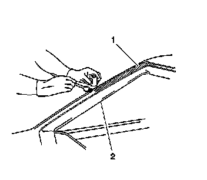
Caution: Failure to prep the area prior to the application of primer may cause insufficient bonding of urethane adhesive. Insufficient bonding of urethane adhesive may allow unrestrained occupants to be ejected from the vehicle resulting in personal injury.
Important: Do not apply the black #3 primer to the existing bead (1) of the urethane adhesive on the pinchweld flange. Apply the primer only to nicks, scratches or the primed surfaces.
7. Shake the pinchweld primer black #3 for at least 1 minute.
8. Use a new dauber in order to apply the primer to the surface of the pinchweld flange (1).
9. Allow the pinchweld primer to dry for approximately 10 minutes.
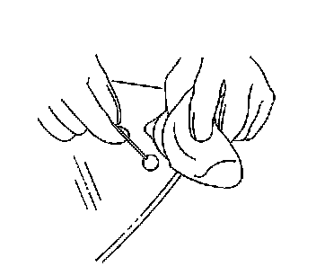
Important: Use care when applying glass prep clear #1 on the window. This primer dries almost instantly, and may stain the viewing area of the window if not applied evenly.
10. Use a new dauber in order to apply glass prep clear #1 to the area approximately 10-16 mm (3/8-5/8 in) around the entire perimeter of the window inner surface.
Immediately wipe the glass primed area using a clean, lint-free cloth.
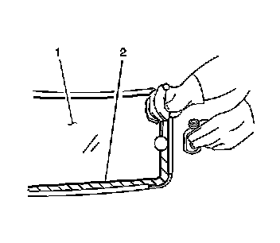
Important: The glass primer black #2 is effective up to 8 hours after applying it to the glass. The primed surface of the glass must be kept clean.
11. Shake the glass primer black #2 for at least 1 minute.
12. Use a new dauber in order to apply the glass primer black #2 to the same areas (2) that glass prep clear #1 was applied.
13. Allow the glass primer to dry for approximately 10 minutes.
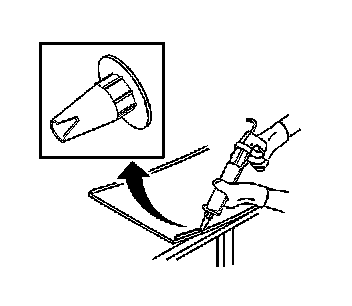
14. Cut the applicator nozzle as indicated in order to provide a minimum bead size of 8 mm (3/8 in) wide and 14 mm (5/8 in) high.
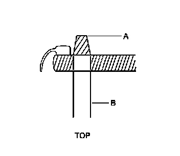
15. The urethane adhesive bead must maintain a consistent height (A) and width (B) uniformity.
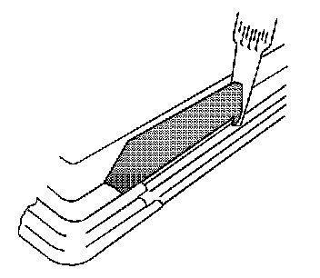
16. Use a cartridge-type caulking gun in order to apply a smooth, continuous bead of urethane adhesive.
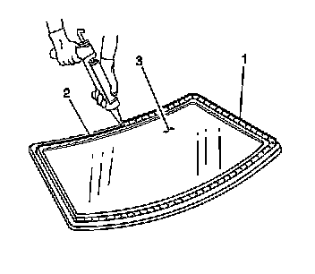
17. Use the edge of the window or the inside edge of the reveal molding as a guide for the nozzle in order to apply the urethane adhesive (1) to the inner surface of the window (3).

18. With the aid of an assistant, place the window into the opening while positioning the locator pins to the body.
19. Center the front window between the six rubber bumpers located on the side reveal molding retainer clips.
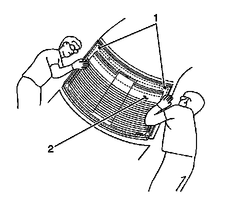
20. With the aid of an assistant, place the rear window into the opening while positioning the locator pins (1) to the body.
21. Center the rear window (2) into the opening.
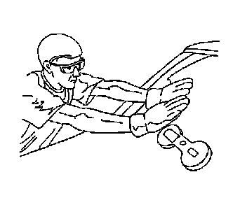
22. Press firmly around the entire periphery of the window in order to wet-out the urethane adhesive bead.
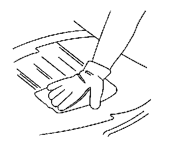
23. Clean any excess urethane adhesive from the body using VM&P Naptha.
24. Clean any excess urethane adhesive from the interior trim using acrysol.
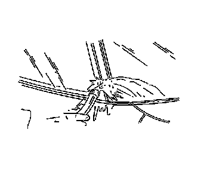
Important: Do not direct a hard stream of high pressure water to the freshly applied urethane adhesive.
25. Use a soft spray of warm water in order to immediately water test the window.
26. Inspect the window for leaks.
27. If any leaks are found, use a plastic paddle in order to apply extra urethane adhesive at the leak point.
28. Retest the window for leaks.
Caution: Insufficient curing of urethane adhesive may allow unrestrained occupants to be ejected from the vehicle resulting in personal injury.
* For the moisture-curing type of urethane adhesive, allow a minimum of 6 hours at 21°C (70°F) or greater and with at least 30 percent relative humidity. Allow at least 24 hours for the complete curing of the urethane adhesive.
* For the chemical-curing type of urethane adhesive, allow a minimum of 1 hour .
Do NOT physically disturb the repair area until after these minimum times have elapsed.
29. Maintain the following conditions in order to properly cure the urethane adhesive:
* Partially lower a door window in order to prevent pressure buildups when closing doors before the urethane adhesive cures.
* Do not drive the vehicle until the urethane adhesive is cured. Refer to the above curing times.
* Do not use compressed air in order to dry the urethane adhesive.
30. Complete the window installation.